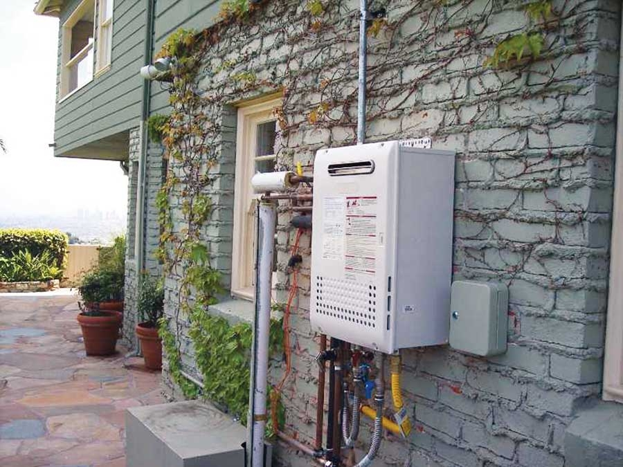

Energy-Efficient On-Demand Water Heaters
Why pay to keep water hot when you’re not using it?
By Dan Chiras
October/November 2009
Although some conventional water heaters are more energy-efficient, most older water heaters and many lower-priced models waste about 20 percent of the energy they consume. Much of the heat they produce escapes through the wall of the tank as the hot water sits unused for many hours at a time. This is known as standby loss.
Besides being inefficient, storage water heaters (conventional water heaters) don’t last long - only about 13 years. Homeowners can increase the life of their water heaters by lowering the temperature to a more reasonable setting, by periodically flushing sediment from the bottom of the tank, and by replacing the anode rod. Some of these measures also save energy.
If your water heater is more than 10 years old and has not been maintained, it may be approaching the end of its useful life. If it’s leaking or showing signs of rust, it definitely needs to be replaced. So consider your options before it goes kaput and you have to make a rushed decision to get hot water back. Now might be the time to install a tankless water heater.
How Do Tankless Water Heaters Work?
Also known as “instantaneous” or “tankless” water heaters, on-demand water heaters are surprisingly compact units. Some are designed to meet the needs of a laundry room or bathroom, but others provide hot water for an entire house.
Like conventional storage water heaters, tankless water heaters provide hot water 24 hours a day, 365 days a year. However, they meet this need without the standby losses of storage tank heaters.
Tankless water heaters don’t suffer from standby losses because they don’t store hot water - they generate it as it’s needed. When a hot-water faucet is turned on, cold water begins to flow into the water heater. A flow sensor inside the tankless water heater detects water flow and sends a signal to a tiny computer inside the unit. The computer sends a signal to the gas burner or electric heating element in the water heater, turning on the heat source. Water flowing through the heat exchanger in the tankless water heater heats up rapidly - increasing in temperature from about 50 degrees to 120 degrees in a matter of seconds.
Estimated Energy Savings
Because tankless water heaters eliminate standby losses, replacing an old, inefficient water heater with a compact tankless water heater will reduce your annual energy bills. The U.S. Department of Energy (DOE) projects savings up to 30 percent on the cost of heating water, compared to a storage water heater.
Actual savings depend on several factors, primarily the efficiency of the new water heater and the amount of hot water a family uses each day. Also, using electricity instead of natural gas is a much more costly way to heat water.
For homes that use up to 41 gallons of hot water daily (probably a two-person household), the DOE estimates savings of 24 to 34 percent on the cost of providing hot water via a tankless heater compared to a conventional storage-tank heater. In homes that use substantially more hot water, around 86 gallons per day (probably four or more people), the DOE estimates reduced savings, only about 8 to 14 percent. This is because there is less idle time and less standby loss with a conventional water heater if a lot of hot water is used throughout the day. (Hot water use varies significantly depending on your habits. Estimate how much hot water you use by using the Consumer Reports calculators.)
For large families, it may make more sense to stick with an energy-efficient conventional water heater and implement other hot-water saving strategies, such as installing water-efficient shower heads, dishwashers and clothes washers - to cut down the quantity of hot water used, rather than changing the way water is heated.
Even greater energy savings can be achieved by installing a tankless water heater at major points of use - for example, near the master bathroom, a washing machine or kitchen. (This reduces the length of the pipe run, which reduces the amount of hot water left in the line when the faucet is turned off.) This strategy could yield savings ranging from 27 to 50 percent, although savings could be offset by the cost of purchasing and installing additional tankless water heaters.
Additional savings also result from the long life of tankless water heaters. According to the DOE’s Office of Energy Efficiency and Renewable Energy, most tankless water heaters last at least 20 years. And they’re made from easy-to-replace, off-the-shelf parts, so repairing a tankless water heater (not an option with leaking storage water heaters) can result in even longer service. A tankless water heater, with periodic maintenance, could outlast two storage water heaters. If you’re considering a tankless water heater and comparing costs to a new storage water heater, be sure to consider longevity.
By reducing your energy demand, a tankless water heater also reduces your family’s contribution to local, regional and global air pollution. Because they’re smaller, easier to repair, more durable and longer-lasting than storage water heaters, tankless water heaters also reduce resource consumption and landfill waste. Using fewer natural resources means less environmental disruption from mining, as well as pollution.
Possible Downsides
Although tankless water heaters offer many benefits over storage water heaters, they do have a few disadvantages. While they produce a steady stream of hot water, they may not produce enough hot water to meet everyone’s needs if demand is high. If hot water is being used at several locations simultaneously, water temperature at the various points of use may decline. Someone taking a shower may experience a drop in water temperature if another family member is also showering, washing clothes or running the dishwasher. (The same can occur, however, when using a traditional storage water heater.)
This problem can be corrected (or at least mitigated) by simple, cost-effective efficiency measures, such as installing water-efficient shower heads, taking shorter showers, replacing old appliances with water-efficient models, washing clothes with cold water and coordinating hot water use.
There are three more-expensive ways to ensure plenty of water from a tankless water heater: 1) Purchase the highest output model you can find. 2) Install two tankless water heaters, although this is a less efficient use of resources. If connected in parallel, two tankless water heaters can dramatically increase the availability of hot water. 3) Install a tankless water heater at each point of use - near bathrooms, the laundry room and the kitchen.
Installing an On-demand Water Heater
Replacing a storage water heater with a tankless model is a major project, especially if the installation requires rerouting the exhaust (flue) pipe or increasing the size of the opening through which the flue pipe exits your house. Some tankless water heaters require larger flue pipes than those used for storage water heaters. This project requires considerable knowledge of plumbing and electricity and is best done by a professional.
Shopping Tips
If you’re replacing a conventional water heater, you may want to consider buying a more efficient storage water heater. Some manufacturers have made dramatic efficiency improvements. Check out the yellow energy tag, which indicates energy use of the model you are considering versus the average for models in its size range. A side-by-side comparison of an efficient storage water heater and a tankless water heater is worth the time.
By maintaining a new storage water heater - replacing the anode rod as needed and annually flushing the sediment from the tank - you can dramatically increase its life. Installing energy-efficient faucet aerators and shower heads will also lower your water and energy bills.
Tankless water heaters can be purchased through home improvement centers (which offer installation services) and from plumbers. When shopping for a tankless water heater, be sure to consider the physical size of the unit and whether it will fit in the location you have in mind.
Also, pay close attention to the output of the tankless water heater-the rate at which it produces hot water versus your demands. Most tankless water heaters supply 2 to 5 gallons of hot water per minute, which is sufficient for energy- and water-efficient end-users.
Gas-fired tankless water heaters typically produce higher flow rates (more hot water per minute) than electric units. Takagi makes a tankless water heater that delivers up to 7 gallons of hot water per minute, which should be enough for several simultaneous uses, especially water-efficient ones.
Some manufacturers, such as Paloma, rate their units on heat output, measured in Btus (British thermal units). Paloma recommends its 141,000- to 145,000-Btu tankless water heater for homes with one or two bathrooms, and the 199,000-Btu units for two- to three-bathroom homes.
When shopping for a tankless water heater, pay attention to fuel type. Power from natural gas and propane produces fewer pollutants than electric models, if they are powered by nuclear or coal-burning plants. Burning natural gas and propane is nearly twice as efficient as making electricity. Look for a tankless water heater with high energy efficiency (called the “fuel factor” or “energy factor”). For greater savings, purchase a model with an electronic ignition instead of a pilot light.
In addition to the cost of the unit, get an estimate of installation costs before you lay your money down. Like a conventional water heater, a tankless water heater requires a flue pipe to remove unburned gases and pollutants, among them carbon monoxide, which is generated from the combustion of natural gas or propane.
Venting is not required for electric water heaters, which slightly lowers installation costs. Unfortunately, electricity is a much more costly way to heat water.
Finally, if you’re thinking about installing a solar hot water system or already have one in place, purchase a tankless water heater designed to work with these systems. Solar hot-water systems feed solar-heated water to the tankless water heater.
What Will It Cost?
Tankless water heaters aren’t cheap. Prices range from about $600 to $1,500, depending on the size of the unit and its output. Installation can run from a few hundred dollars to $1,000 or more for difficult projects. In contrast, a conventional natural gas or propane water heater costs roughly $300 (for a small tank) to $700, plus about $200 to $300 for installation, depending on the size and any complications. Electric water heaters are typically the more expensive models.
What Will You Save?
Is the extra cost of a tankless water heater worth the investment? A family of four spends about $2,100 a year on energy (the average bill in 2007). With water heating constituting 12 percent of a family’s monthly fuel bill, they’ll spend more than $250 per year for hot water. If they use water wisely, a tankless water heater could save 30 percent - about $75 (or substantially more as energy costs continue to rise). Although these savings may seem modest, in 10 years’ time, they add up to over $750, which partially makes up for the additional initial investment.
Over the 25-year life of the unit, savings could turn the water heater into a money-maker, netting about $1,875 in tax-free savings. Not a bad return, especially considering you’re also saving natural resources and reducing pollution. When doing the math, be sure to include any rebates offered by local utilities and/or tax incentives from the federal government or some state governments. Rebates lower the initial cost, resulting in greater lifetime savings. Check into financial incentives by contacting your state’s office of energy conservation. Every state has one, but the names vary in each state. You can also check the Database of State Incentives for Renewables and Efficiency.
Do Tankless Water Heaters Reduce Water Consumption?
Contrary to popular misconception, tankless water heaters do not reduce water demand in a home, unless they’re installed at the point of use. In most instances, you still have to run the water until the hot water from the water heater purges all of the cold water that’s been sitting in the hot water line between the tank and the end use. As a result, tankless water heaters are primarily installed to save energy, not water.
This article is an excerpt from Green Home Improvement by Dan Chiras. Dan teaches workshops on renewable energy and green building through the Evergreen Institute.
|
KEITH WARD You could save up to $75 a year with an on-demand water heater! |
 NORITZ Many tankless water heaters are located inside buildings, but some models are designed for outside installation. |
 GE CONSUMER & INDUSTRIAL A tankless water heater (left side) that supplies the entire house with water is a compact unit - 14 inches wide. (The unit on the right side is a water softener.) |